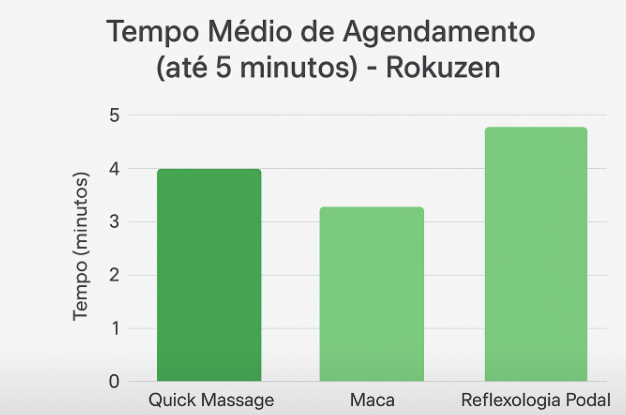
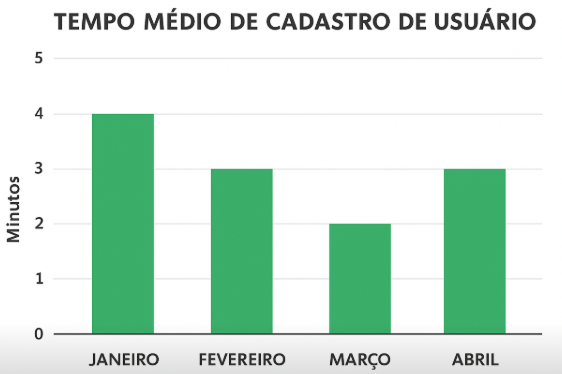

Início
Estatística
Gerenciamento
Sair
Estatística
Tempo médio para realizar um agendamento

Tempo para realizar o cadastro do usuário

Duração (Quick Massage)
Duração (Maca)
Duração (Reflexologia Podal)